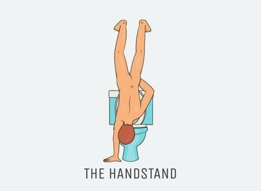

第0招：等待如厕法（你软了，膀胱满了） 第一招：蛙式如厕法（略显吃力） 第二招：弓步如厕法（兵马俑吗） 第三招：水管如厕法（水管粗细很重要） 第四招：吹风机如厕法（哪里不对吹哪里） 第五招：传送门如厕法（想象力丰富） 第六招：体操如厕法（小心尿脸上） 第七招：倒立如厕法（右臂力量大）  第八招：超人如厕法（最Man的方式） 虽然这一伟大的难题被攻克了，但是平时我们也要多加练习，才能熟练运用。 文章源自知乎 看完我笑尿了。。。